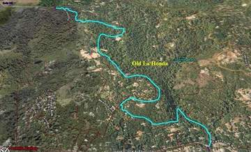

Week 2: OLH
21 Oct 2006
|
2006 Low-Key Hillclimbs Week 2: OLH 21 Oct 2006 |
|  |
| Aerial photo of OLH, courtesy of Stanford Cycling |
What's your time?
This is it: the essence of climbing. Other climbs are fun and challenging, scenic and rewarding, but when it comes to getting a number, this is the one. The benchmark.
Highly accessible from its innocent-looking intersection with Portola Road, the timing starts at the bridge encountered soon after. From there it winds, at macroscopically uniform grade with just enough microscopic variation to keep things interesting, through relatively sparsely developed land. The first set of mailboxes mark the end of the first third. It's about here that early enthusiasm confronts reality, where all-too-often riders find themselves downshifting into the gear they probably should have been in all along.
The climb continues, the houses less common. A second set of mailboxes marks the approximate halfway-point, then the road takes on a new character, as the eucalyptis of the lower slopes give way to redwoods. The second third of the climb is marked by two large redwood trunks, constricting the roadway. The true test of will begins.
Now the road is deep into the redwoods. Although not old-growth, they are nevertheless inspiring, inspiration that is strongly needed as you test your resources, ramping up the effort; the finish is approaching. First, the intersection with Martinez on the right, then Upenof on the left, then Upenof again, its loop complete. Suppress the inhibitions, embrace the pain -- it will be over soon. The pavement gets rougher, and you're almost there. Out of the saddle, around a final right hand turn, and there's the stop sign. The finish. You're done!
Your moment of truth. What's your time?
Our insurance demands it: helmets are required. Sorry kids, no exceptions!
We'll be reg/staging in the NE corner area of Alpine and Portola Roads. There's an out of business grocery store there which looks good for our get together. We ask that, once again, like you did this week, you park away from the reg/stage area and ride in (there are plenty of legal parking areas within warmup distance of the reg/stage area).
We'll go into more detail next week, but briefly, to minimize congestion on OLH, we'll be sending you off in small 10-rider groups separated by about 3 - 5 minutes. You'll ride calmly and cooling to the base of OLH where our starter will record your start time: you'll climb - and our finisher timer will record your finish time. We'll then subtract the two to get your climb time.
On-line registration is available for a $2 fee from BikeReg.com.
| stats | 3.35 miles, 1290 ft, 7.3% |
| format | small groups |
| time | reg 9 - 9:45 start 10am |
| coordinator | |
| aerial view | Stanford Cycling |
| route profile | Lucas Pereira's profile |
| weather | Weather Underground Weather Bonk |
| registration form |
PDF form On-line ($2 fee) |

{kind=link}